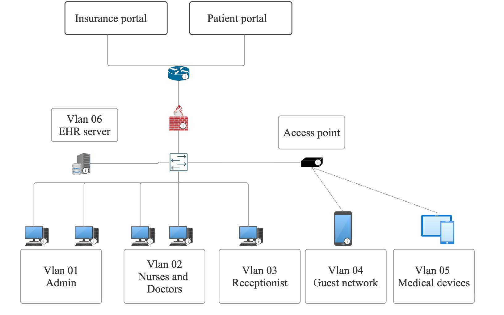

A cybersecurity report written for a small medical office scenario. The report covers real-world security considerations for a healthcare environment, including threat identification and mitigation, network design, ransomware defense, cryptography, OS hardening, and authentication. The fictional office handles electronic health records, insurance billing, and a patient portal, making HIPAA compliance a central focus throughout. The report is written for both a technical and non-technical audience.
This report outlines security structure and recommendations for Noname Health Clinic accounting for the layout and scale of two treatment rooms, four offices, a server, and a reception area. Health clinics must adhere to the HIPAA security measures. Refusal or negligence of not following HIPAA may result in a fine from $1,000 - $50,000 per violation (American Medical Association, 2026), and or jailtime up to 1 year. The following attack vectors are attacks that can reasonably be executed on a network that could breach HIPAA compliance.
Keeping the data reasonably safe is the utmost priority as data handled includes health records, social security numbers, contact info, and other forms of personally identifiable information (PII). If said information were to come out, this data could be used against the person through personal advertising, identity theft, bank theft, personal cyber-attacks using health information, etc. A loss of data is also a loss in trust.
Assumptions were made based on the description of the layout which includes, that each computer is connected to the network via an access point and not a switch, that everything was implemented with default settings, and the patient portal has an employee login.
The vulnerability that this attack relies on is a lack of training from staff, as well as a lack of email filtering and multi-factor authentication. The attack starts with an email. If the email is able to get past the filters of the email, it will show up in an employee's inbox. Whose inbox it appears in depends on what level of access the attacker either wants access to, or thinks they can get access to. The email itself explains that the employee's password must be changed to access the patient portal with a link to the portal login. However, upon clicking on the link provided, it will lead to the IP address of the attacker rather than the portal where the attacker is waiting for the employee to log in so the attacker can log the credentials to the patient portal.
The reason somebody might want to have access to the patient portal will likely be for one reason, to steal data and sell it. If the attacker was able to access the patient portal through the employee's login, they will have full access and endanger the confidentiality, integrity, and availability of the data. Let's say the attacker steals that data then sends another email saying that their data was stolen and if they are not paid a certain amount then they will release the data to the public or sell it to an anonymous person. At that point you only have a few options but that will be covered in the ransomware section.
Fortunately, there are several solutions that can be implemented for this vulnerability. This vulnerability only happens when a chain of either misconfigurations and or lack of understanding happens. The chain will look something like this: Email, Employee, Patient portal.
The first and foremost thing to look at is the employee. Frequent training is a well established HIPAA safeguard, and should be implemented at regular intervals (U.S. Department of Health and Human Services, 2024). If the employee never clicks the email, the attack stops before it even begins. But mistakes and slips can still happen. A new employee might skip that training for one reason or another or an employee simply forgets. That's when email becomes the next layer of security. A good email filter is crucial to making sure close to all spam never reaches the inbox. The principle of least privilege applies here, making sure that employees that do not need to email anybody outside the clinic have a filter for all other emails to be sent to spam. Employees that have frequent communication outside of the clinic should have access but more frequent reminders of the dangers of phishing emails and how to spot them. If technically inclined, tests of this can be easily implemented by sending an email that has signs of being a phishing attempt with a link, and seeing who clicks on the email and links. That way you can focus more on employees that need more training before an accident occurs.
But let's say both of those protections fail, the patient portal can have more security that still prevents an attacker from either accessing, or at least, limiting what they can access. Let's look at the most critical thing to implement: two-factor authentication. This is basically a separate form of password that is harder to get information from. This would mean a password and something you are, have, etc. This is made for situations like this where if the attacker does manage to get your password, it's useless without the other form of authentication. Some factors of authentication are better than others, however. A common type of multifactor is SMS messaging. A message gets sent with a number that you would put into the webpage. This would theoretically mean that the attacker would not be able to access the portal without a phone, but SMS is vulnerable to man-in-the-middle attacks which is a whole conversation unto itself. The most optimal multi-factor for this scenario would be an authenticator app. This is a separate app that has a 6-digit code that changes every 30 seconds. That means if an attacker was somehow able to get the code they would only have 30 seconds or less to input it.
Moving on from two-factor authentication, if the patient portal is controlled by the clinic itself it is worth talking about how the employee is able to access patient data. Employees will often not need to access the data outside the network, therefore it is worth asking why the employees should log in through the patient portal itself. The better solution is to keep employee access to the data within the network itself. That way an attacker would need to have access to the network before they are even able to attempt to log in. If an employee somehow does need to have access to the network, a VPN can be implemented allowing tunneled access to the network. The last thing in this scenario would be to implement the rule of least privilege. If all protections fail, limiting what the attacker can access can often reduce the damage impacting the clinic. HIPAA requires information to be managed and implement policy's when authorizing PHI to a user (U.S. Department of Health and Human Services, 2024). A receptionist should not have access to all patient data as it is not required to do their job. Similarly, a nurse should not have access to a patient's billing or address info as it is not relevant to do their job.
Looking at the network, most computers have a wireless connection to the router using WPA2 as well as Bluetooth being turned on. While not the most vulnerable thing on the network, it can still considered a large attack vector. WPA2 is not as secure as it used to be. The handshake is easily capturable so a weak or default password could be easily run through with a brute force or a dictionary attack. If an attacker is able to log in to the WiFi, a man-in-the-middle attack can be implemented. The attacker could act as any cog in the machine at that point. They could act as the DNS for the clinic making employees go to fake websites, bypassing the email layer entirely from the phishing section. They could sniff all traffic on the network making all unencrypted traffic visible. It's important to put protections against this as HIPAA clarifies that transmission security must be reasonably secure to protect against unauthorized access (U.S. Department of Health and Human Services, 2024). Bluetooth is also a considerable attack surface. The main Bluetooth attacks are Bluesnarfing and Bluejacking. Bluesnarfing being considerably more dangerous than Bluejacking. Bluesnarfing allows an attacker to connect to a Bluetooth connection without authorization and extract data from it such as contacts, calendars, emails, and even files.
Bluetooth is the easiest to mitigate. Turning off Bluetooth when not in use stops any Bluetooth attacks from occurring and gives an attacker a smaller window to implement the attack. If available, using ethernet instead of wireless is a great security feature that stops wireless attacks by taking wireless out of the equation. If ethernet is not an option for the building, updating the wireless security from WPA2 to WPA3, or better yet WPA3 Enterprise, would improve security significantly as the handshake is harder to capture. The main downside to WPA3 at the moment is that not all devices support it. However, that can be addressed by VLANs.
VLANs are a major security measure that can reduce the amount of access an attacker is able to gain. Most routers only implement one network per router, but VLANs can make many networks with different WiFi capabilities on a single router. This is very useful in an office environment as this provides many security measures that cannot be implemented in a single network. For example, not all VLANs need WiFi. Ideally if you have ethernet and a VLAN that connects to a network of only nurses' computers it makes it hard for the attacker to access the network as there is no wireless attack vector to exploit. If some devices can only do WPA2 while others can do WPA3, you can make two separate VLANs that support those two different security measures. The overall purpose is to isolate each network into its own separate network so that if an attacker gets access, the only data accessible is whatever is on that network. This is also helpful for guest WiFi as it is important to isolate guest WiFi so confidential traffic is not running alongside potentially unsecure guest traffic.
Even as time goes along, many medical devices often run outdated hardware that makes them easily vulnerable in today's environment. The consequences of one of these medical devices being hacked are great. At this point people's lives could be at stake so it is important that these medical devices, while outdated, are protected as much as possible.
Before buying a medical device, making sure the supply chain the medical devices follow is secure. If possible, getting the most up to date firmware and software should be prioritized. Once the equipment is purchased and installed, a VLAN should be dedicated to the equipment itself. Making sure that all medical devices are on a separate isolated VLAN makes it harder for an attacker to take advantage of the attack surface compared to if it was sharing traffic with other users. Another precaution that can be done is making sure all medical devices, while not in use, are shut down. This limits the time these attack surfaces are up. Unfortunately, there is not much more that can be done after that.
Ransomware is nightmare scenario for all companies. The most common story you hear when a ransomware attack occurs is in the morning when everyone appears at work, all the computers show a screen that says, that all their data was stolen and if they want it back, they will need to pay a certain amount. The way you deal with ransom has similarities with how to deal with most malware. A good antivirus that is continuously updated is a good start. Loss may still occur depending on how fast and sensitive the antivirus is, but it still will often stop the ransomware from encrypting the files before it gets too far. As stated before good training on how to avoid malware will help prevent it from getting on the network in the first place.
Backup solutions become crucial here. Having good backups is crucial to data availability and is required by HIPAA as a contingency plan (U.S. Department of Health and Human Services, 2024). Even if attacker is able to steal the initial data and encrypt it, a good back up can the very least allow to bring systems up and running in a short amount of time. A good backup method to follow is the grandfather-father-son (GFS) that specifies a daily weekly and monthly backups. That way if the backup needs to be used it is up to date and not much data loss will occur. For this clinic, if possible, it is also important to have a cold storage and a warm server in case of emergency and not just for ransomware.
The question then becomes, what can you do if ransomware does get into your network and manages to encrypt your files. The unfortunate truth is not much. Even with a backup the clinic will suffer a reputation hit, and data will still be exposed. Paying the hackers is frowned upon for two reasons. First there is no guarantee that the attackers will give the data back and even if they do, there is no promise that they won't have a copy somewhere. Second, paying ransomware hackers encourages them to keep targeting you and others because they know you will pay. To put it in simple terms, Antivirus and training protect confidentiality and integrity of the data while backups protect availability.
Data is consistently moving in a clinic environment. A lot of that data is considered to be personally identifiable information (PII). Therefore, it is important to look at protections that target data at rest and data in transit. Failing to protect data confidentiality violates the general rules of HIPAA making this a basic HIPAA violation (U.S. Department of Health and Human Services, 2024.). Data in transit is important to defend due to the potential of man-in-the-middle attacks. Firewalls are a useful tool when implementing data in transit as a good firewall will prevent PII information before it can even get off the computer. For example, HTTPS is a good start. Making sure all data can be transmitted via HTTPS vs its unsecured HTTP, blocks web-based traffic from being seen by hackers. Additionally, you can make DNS requests encrypted by turning on secure connection in browser settings. If an attacker cannot see what websites the employees go to it is harder to formulate an attack on an individual.
Data at rest is just as important if not more important than data in transit. For example, website credentials that are stored in the server should be hashed with standard methods such as bcrypt or Argon2. That way if an attacker manages to get into the network, they will not be able to unlock the hash unless the user's password was weak, and the attacker has a strong computer. To take it one step further, encrypting the entire drives that the server uses will protect it physically. If the drive is stolen from the hardware bay, the attacker would not only not be able to access health records, but the hashes as well. The only way to be able to read the data is if the attacker had the key which should be stored securely offline. It's not just the server that should have disk encryption. Using software like BitLocker, assuming that all computers are running Windows, will provide the same sort of physical protection that the server does. Using these methods provides end-to-end protection making the attack surface smaller than most normal networks.
Some OS hardening measures like disk encryption and the principle of least privilege were suggested, but other measures are often needed to make sure every end device is as secure as possible. The OS itself is a big attack vector as exploits and vulnerabilities are found every day. If a computer is outdated an attacker could easily exploit the system and cause further damage. The easiest way to make sure that computers are protected is to update them regularly. A simple script that runs overnight that makes the computers update goes a long way. If the computers do not stay on overnight, running the script at startup is also a good option.
Going into the more technical side, doing some research on what services are needed on the computer can allow an admin to disable unnecessary services, reducing the attack surface even further by removing any exploits those services do or will get out of the equation. Similarly, whitelisting applications can stop employees from potentially downloading and installing malware and trojans. Physically, a common way to install malware is for the attacker to leave USB drives containing malware in the area around the building, in hopes that an employee will pick one up and plug it into a work computer. Disabling USB ports is a good solution as it allows the admin to control what gets installed into the computer a little more.
Authentication is a foundation of verifying the person who logs in is who they say they are. This is very helpful against insider threats and complies with HIPAA guidelines under technical safeguards (U.S. Department of Health and Human Services, 2024). Multi-factor authentication was discussed with the patient portal, but other forms of authentication should be implemented in all possible logins. Password policies are a good start. Forcing employees to use long passwords with a few special characters and numbers makes cracking the password very hard to do. Additionally, adding an expiration date for the password is helpful as it forces the employees to change passwords occasionally, so that if an attacker is able to somehow crack the password, they will have a more restrictive window of time to break into the network. It is worth noting that password expiration dates should not be too low as forcing employees to change passwords too often reduces the complexity of the passwords.
Making sure that the account has a lockout system after a certain number of attempts is worth noting. This makes cracking passwords nearly impossible due to the time between each attempt, unless they find a way to crack it offline. Authentication mitigates damage when attackers have access to a login. Even if passwords are stolen, two-factor authentication can stop an attacker in its tracks as they would still require the other form of authentication.
The network should be designed with the highest level of security at all times. Physically, the best thing that can be done is implementing a switch and an ethernet connection to all available computers on the network instead of a wireless one, then adding VLANs to isolate each computer based on role, which would mean separate VLANs for admin, doctors, receptionists, guest network, medical devices, and the EHR server itself. If a computer needs to cross VLANs, firewall rules may be implemented to allow other VLAN devices to talk to each other on a need-to-communicate basis.

Security in the healthcare system is an ongoing battle. Many difficult decisions have to be made between what is feasible and what is most secure. The attacks specified are not the only scenarios that can happen to a clinic as attackers can be sneaky and unpredictable. Defense in layers is what makes the difference. Implementing strong authentication, network segmentation, cryptography, and frequent training provides a strong baseline and allows admins and staff to implement solutions in the future. The greatest security measure that can be implemented is training. Almost every attack in this report phishing, ransomware, misconfigured authentication at some point rely on human error, and can be avoided if proper training is provided and gives a stronger foundation to build on.